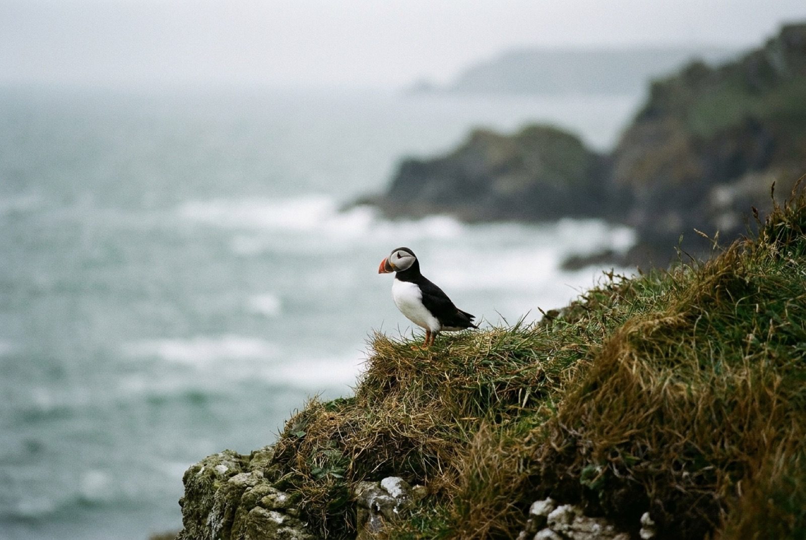
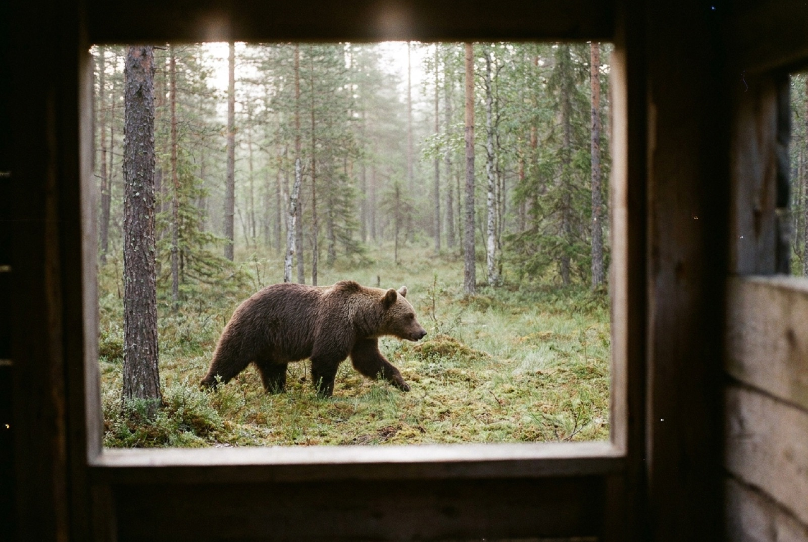
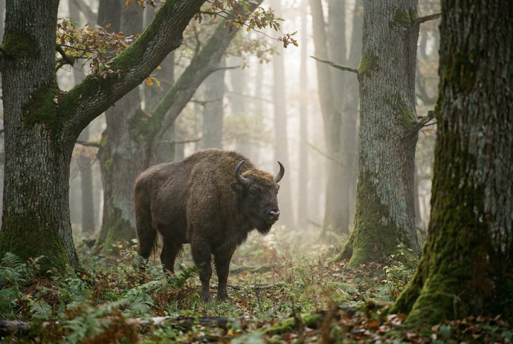

Nieuwe bestemmingen
Nieuwe bestemmingen om naar uit te kijken
Marco werkt aan nieuwe fotoreizen waarin je de tijd krijgt om te kijken, te wachten en te fotograferen.
Marco werkt aan nieuwe fotoreizen waarin je de tijd krijgt om te kijken, te wachten en te fotograferen.
De reizen zijn nog in voorbereiding. Via de interesselijst ontvang je bericht zodra een reis definitief doorgaat. Je krijgt dan als eerste de mogelijkheid om te boeken.

Papegaaiduikers en jan-van-genten fotograferen op een gemakkelijk bereikbare plek, met tijd om in mooi licht te fotograferen.

Berenfotografie op een nieuwe locatie, gekozen omdat je er twee keer zoveel tijd hebt om te fotograferen.

Op zoek naar wolven, wisenten, lynxen, Laplanduilen en zeearenden in het laatste oerbos van Europa.
Stuur Marco een WhatsApp-bericht met de reis waarin je interesse hebt, je naam en je adres.
Wil je meer weten over een workshop of fotoreis? Of wil je een foto bestellen? Stuur Marco de Paauw een WhatsApp-bericht.
+31 6 265 885 62
Stuur een WhatsApp-bericht